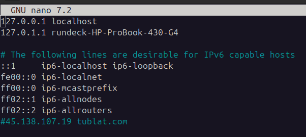
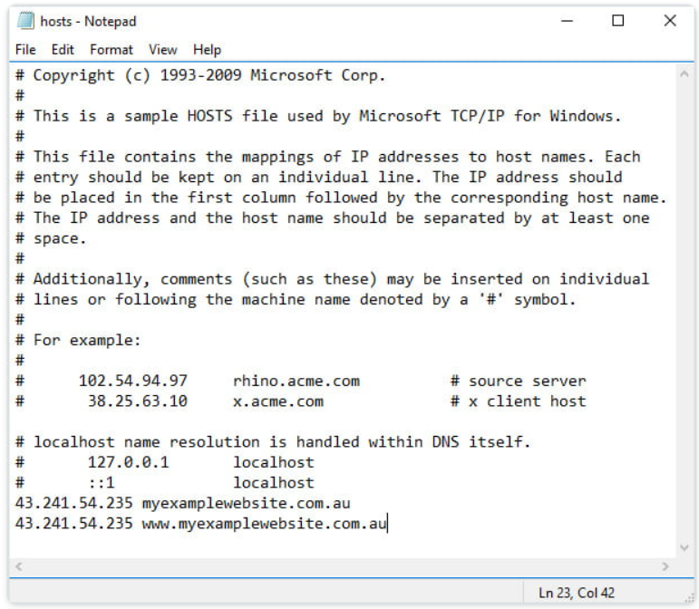

Host Testing
Steps for testing a domain on a different IP address from the host computer (customer's computer)
- Make sure the WGP account exists and the domain is added with the correct Target IP - it is not necessary to connect DNS zone to our proxy at this stage
- Use the terminal command
sudo nano /etc/hosts to access the hosts file - At the end of the list type the IP address you want to test the domain on followed by the domain name (can do root and sub domain)
- Type Ctrl+o and Enter to save the file then Ctrl+x to exit
- Now you can test the domain in the browser and it should load from the IP address you typed
- Check cache if not working correctly
- Once finished, return to hosts file and delete or comment out the line with the domain and new IP address

To change the hosts file on a Windows 7, XP and Vista operating system, follow the steps below:
- Click Start
- In the search field, search for “Notepad“
- Right-click on the result for “Notepad”
- Select “Run as Administrator“
- Navigate the hosts file, which is usually in the location: C:WindowsSystem32driversetchosts
- Append your entry to the bottom of the file as shown below in the same format as above - 197.221.22.12 MyDomain.co.za
- Save the file by opening the “File menu” and select “Save”
